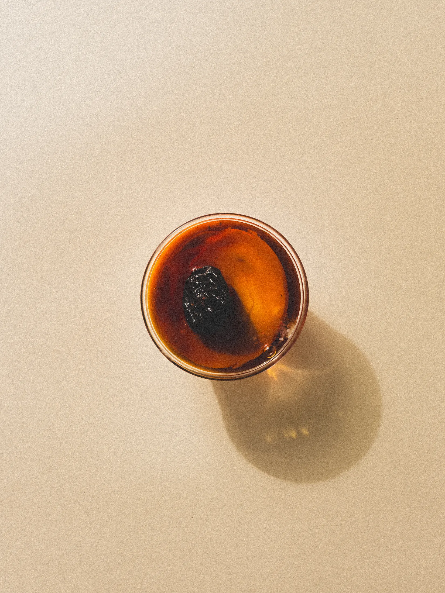

01
fotografia
Ensaios para restaurantes, marcas e produtos com foco em presença, gesto e matéria.
Miolo é um estúdio de conteúdo visual para gastronomia, produto e hospitalidade. A marca nasce para organizar imagem, direção visual e bancos de conteúdo em uma estrutura que faça sentido para o cliente: categorias objetivas, ensaios legíveis, navegação limpa e contato sem ruído.
Ensaios para restaurantes, marcas e produtos com foco em presença, gesto e matéria.
Construção de linguagem, enquadramento, ritmo e atmosfera para campanhas e bancos de imagem.
Produções recorrentes pensadas para alimentar site, imprensa, cardápio, social e materiais de marca.
Narrativas visuais para lancamentos, menus, colaborações, ambientes e presença de marca.
A Miolo parte do acervo comercial do Bernardo e o reorganiza em dois recortes claros para cliente agora: gastronomia e produto. Hospitalidade segue no posicionamento da marca e sobe quando o corpo de trabalho estiver consistente.

cafe, textura e rotina

casa, recepcao e mesa

mesa, forno e encontro

brigada, servico e prato

lifestyle, objeto e campanha

objeto, tecido e presenca

superficie, forma e tato

forma, superficie e uso
Contato direto, sem intermediacao, com caminho curto para projeto, conversa e planejamento de conteudo.